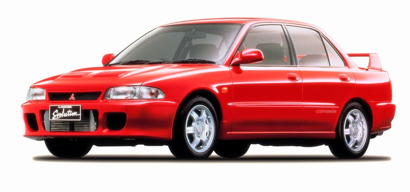
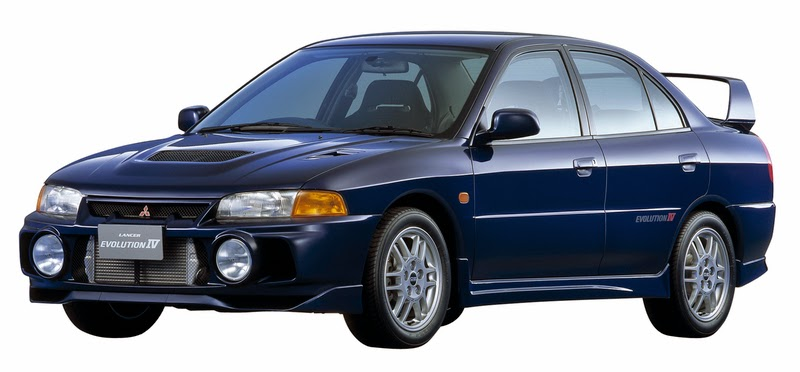

Como o próprio nome diz, o Lancer Evolution é a variação mais potente do Mitsubishi
Lancer, um dos sedãs mais vendidos e conhecidos do Japão. Ele é o principal concorrente
do Subaru Impreza WRX STI, outro sedã esportivo bem conhecido do público oriental.
Inicialmente criado para atender ao mercado japonês, ele foi exportado para o Reino Unido
e outros países da Europa a partir de 1998, atendendo a demanda do "mercado cinza".
O Lancer Evolution só chegou aos Estados Unidos em 2003, a partir da 8ª geração. O mais
curiosos deste carro é que os motores variam conforme o local em que são vendidos.
Por exemplo: o modelo japonês alcançava 276 HP de potência na 1ª geração, enquanto que
os modelos europeus tinham 291 HP!
Modelos

O 1º Lancer Evolution foi lançado em 1992, criado para disputar o World Rally
Championship (WRC) e popularmente chamado de "Evo original". Disponível nas versões
GSR (rua e conforto, incluindo sistema de climatização digital) e RS (mais esportiva,
porém mais simples), ele era equipado com o motor DOHC 2.0L 4 cilindros em linha com
16 válvulas, alcançando 250 HP e velocidade máxima de 180 km/h (limitada eletronicamente).
A produção foi limitada a 5.000 unidades.

As gerações seguintes (II e III) mantiveram o mesmo visual da primeira, com algumas poucas
mudanças estéticas (para melhoria de aerodinâmica) e mecânicas (aumento de 10 HP para cada
uma dessas versões).
Em 1996, agora com mais popularidade, foi lançado o Lancer Evolution IV. Além de um novo
visual (graças a uma nova plataforma, maior comprimento e suspensão rebaixada), também foi
disponibilizado um novo motor DOHC 4G63 e um novo turbocompressor que aumentaram a potência
para 280 HP. Outra grande novidade apresentada nesta geração foi o controle eletrônico AYC
(Active Yaw Control), um diferencial traseiro ativo, que melhorava o comportamento do carro
em qualquer tipo de terreno, alinhado a uma nova suspensão traseira Multilink. O resultado
foi o rápido esgotamento das 6.000 unidades produzidas, mas por causa da demanda, mais 4.000
unidades foram feitas, totalizando 10.000 exemplares.
Video
Uma participação do Lancer Evolution III GSR no filme Thunderbolt - Ação Sobre Rodas,
de 1995, onde ele é testado por Jackie Chan numa autoestrada em Hong Kong, com autorização
da polícia local.
Créditos
Todas os textos e imagens acima foram tirados do site abaixo: